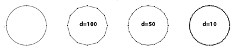

How to use pens
On the pens page we discussed the different pens and their methods. Here we'll look at some practical applications of pens in RoboFab.
Drawing stuff in glyphs
Sometimes it is necessary to draw things in glyph with a script. Boxes around glyphs, logos, patterns. Whatever the reason, a pen is the way to do it. Rather than constructing all the Contour and Segment objects yourself (it's complex and it can be a pain to get it right), just use a pen to tell the Glyph what you want to draw. In order to make it somewhat easier to find the right pen for the right glyph, RGlyph.getPen() will return a pen object for the current environment. So if you're in FontLab getPen() returns a pen fit for drawing in FontLab RGlyphs. In UFO based fonts, getPen() returns a pen for drawing in UFO glyphs. This way you can keep the code free of environment specific imports.

from robofab.world import CurrentFont
f = CurrentFont()
newGlyph = f.newGlyph('demoDrawGlyph', clear=True)
newGlyph.width = 1000
# hey, what's this:
pen = newGlyph.getPen()
# ha! a sneaky way to get a pen object!
pen.moveTo((100, 100))
pen.lineTo((800, 100))
pen.curveTo((1000, 300), (1000, 600), (800, 800))
pen.lineTo((100, 800))
pen.lineTo((100, 100))
pen.closePath()
newGlyph.update()
f.update()
robofab.objects.pen.digestPen
Using pens to get to contour and outline data.
DigestPointPen
The DigestPointPen is a pointsPen and it doesn't draw anything, but collects all the coordinates and drawing instructions from glyph.drawPoints(). When the drawing is done you can get to the data with myPen.getDigest(). The result is a tuple with a series of coordinates and instructions. Because it is a tuple you can use it to compare it to other digests, for instance if you want to test if two glyphs are the same or not.
from robofab.world import OpenFont
from robofab.pens.digestPen import DigestPointPen
f = OpenFont()
myPen = DigestPointPen()
f['period'].drawPoints(myPen)
print myPen.getDigest()
>>> ('beginPath',
((140, -4), 'curve', True, None),
((103, -4), None, None, None),
((71, 30), None, None, None),
((71, 69), 'curve', True, None),
((71, 109), None, None, None),
((103, 143), None, None, None),
((140, 143), 'curve', True, None),
((178, 143), None, None, None),
((210, 109), None, None, None),
((210, 69), 'curve', True, None),
((210, 30), None, None, None), \
((178, -4), None, None, None),
'endPath')
DigestPointStructurePen
The DigestPointStructurePen is very similar to the DigestPointPen, but it only returns a tuple of the structure without any coordinates. This is very useful in comparing point structures between glyphs. For instance if you want to test if the glyphs can be used in interpolation. Using the same glyph as the example above, compare the results.
from robofab.world import OpenFont
from robofab.pens.digestPen import DigestPointStructurePen
f = OpenFont()
myPen = DigestPointStructurePen()
f['period'].drawPoints(myPen)
print myPen.getDigest()
>>> ('beginPath',
'curve', None, None,
'curve', None, None,
'curve', None, None,
'curve', None, None,
'endPath')
robofab.objects.pen.filterPen
As you can see, pen objects are handy tools to get to the glyph data. The filterPen.py module contains a couple of pens which modify the contour when it is being drawn. Basically a filterPen controls another pen to do the drawing.
FlattenPen and flattenGlyph()
Process the contours into a series of straight lines by flattening the curves. That means that a curve is drawn as a series of straight lines, approximating the curve. The length of the segment (and therefor the number of segments) determines the precision. The pen can be controlled to flatten with different lengths. FlattenPen works slightly differently from the PostScript "flattenpath" operator: flattenpath slices a cubic curve a fixed number of times, causing the segments to be of different lengths. The FlattenPen measures each segment and tries to get them all the same length.
In order to make working with the FlattenPen easier, filterPen.py also has a convenience function flattenGlyph(). This takes care of the one-pen-controlling-another thing, and replaces the current outlines with the filtered results.
from robofab.world import * from robofab.pens.filterPen import flattenGlyph d = 10 flattenGlyph(CurrentGlyph(), d)
Different values for d will result in different lengths for the segments drawn by the FlattenPen.
ThresholdPen and thresholdGlyph()
ThresholdPen only draws segments which are longer than a certain distance. This can be useful for filtering small unnecessary details from autotraced contours. Obviously this is not a replacement for a trained eye, more like a vacuumcleaner for points.
from robofab.world import * from robofab.pens.filterPen import thresholdGlyph d = 10 thresholdGlyph(CurrentGlyph(), d)

spikeGlyph() and halftoneGlyph()
SpikeGlyph and halftoneGlyph are two very graphic conversions,
from robofab.world import * from robofab.pens.filterPen import spikeGlyph segmentLength = 20 spikeLength = 100 spikeGlyph(CurrentGlyph(), segmentLength, spikeLength)

from robofab.world import * from robofab.pens.filterPen import halftoneGlyph halftoneGlyph(CurrentGlyph())